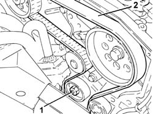
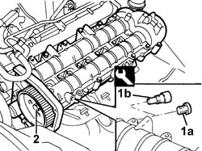
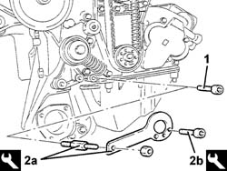
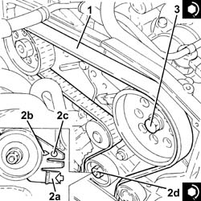

1032B10 TOOTHED timing BELT - R.R. for timing adjustment or replacement
- Path
- Procedures > 10 ENGINE > 1032 timing system > 1032B BELT-DRIVEN TIMING SYSTEM > 1032B10 TOOTHED timing BELT - R.R. for timing adjustment or replacement
- Kind
- repair procedure (removal / refitting; the operation number is the code)
- Applies to
- engines: 2.4 JTD 20V; all production periods
- Interactive page
- https://sloeber94.github.io/elrnDB-lThss/en/#/850109
Applies to: engines: 2.4 JTD 20V; all production periods
 Removing
Removing
 Refitting
Refitting- Position the vehicle on a lift.
- Open the boot and disconnect the negative battery terminal.
See in Op. 7055B54 PROTECTION/GUARD under engine - R.R.
See in Op. 4450B04 Right FRONT WHEEL (one) - R.R.
See in Op. 7055B42 FRONT WHEEL ARCH LINER (one), left or right - R.R.
See in Op. 7055B64 Engine compartment DUST SEAL in front wheel arch (one), left or right - R.R.
See in Op. 1016A10 SOUND-PROOFING COVER - R.R.
See in Op. 7040D50 ENGINE COMPARTMENT UPPER SOUND INSULATION SHIELD - R.R.
See in Op. 1048B44 RIGID air supply PIPE from heat exchanger to intake manifold - R.R.
See in Op. 1048A56 UPPER RESONATOR - R.R.
See in Op. 1092G10 Engine components single drive BELT - R.R.
See in Op. 1092G21 Engine components single belt FIXED TENSIONER - R.R. with belt removed
See in Op. 1092A10 Crankshaft PULLEY - R.R.
See in Op. 1032D12 Timing system protective COVER(S) - R.R.
1. Loosen the nut retaining the timing belt moving tensioner.
2. Release and remove the toothed timing drive belt.

Applies to: engines: 2.4 JTD 20V; all production periods
Refitting
Removing1. Remove plug (1a) and fit the camshaft timing tool (1b) to the cylinder head extension from the exhaust side.
 | Description | Code | Function |
|---|---|---|---|
1b | Templates | 1.870.896.900 | Engine tuning |
2. Loosen the bolt securing the exhaust side timing belt toothed drive pulley.

Applies to: engines: 2.4 JTD 20V; all production periods
1. Undo the bolt fixing the crankcase front cover shown in the diagram.
- Fit the timing drive belt on the drive gear, checking that the belt teeth are correctly inserted in the gear grooves.
2. Fit the tool (2a) and fasten it using the calibrated screw (2b).
| Description | Code | Function |
|---|---|---|---|
2a | Template | 1.860.905.000 | Timing belt timing |
| Description | Code | Function |
|---|---|---|---|
2b | Calibrated Screw | 1.860.905.010 | Timing belt timing |

Applies to: engines: 2.4 JTD 20V; all production periods
1. Fully fit the toothed timing drive belt.
2. Use a screwdriver for leverage in the opening (2a) until the reference for the tensioner (2b) is aligned with the opening reference (2c) and, in this position, tighten the nut (2d) for the belt tensioner to the recommended torque.
 | Value - daNm | Fastening | Component | Ø |
|---|---|---|---|---|
2d | 2.5 | Nut | MOBILE TIMING TENSIONER | M8 |
3. Tighten the bolt securing the exhaust side timing belt toothed drive pulley to the specified torque.
| Value - daNm | Fastening | Component | Ø |
|---|---|---|---|---|
3 | 12 | Bolt | TIMING DRIVEN PULLIES | M12 |

Applies to: engines: 2.4 JTD 20V; all production periods
- Remove the timing tools.
| Description | Code | Function |
|---|---|---|---|
. | Templates | 1.870.896.900 | Engine tuning |
| Description | Code | Function |
|---|---|---|---|
. | Template | 1.860.905.000 | Timing belt timing |
| Description | Code | Function |
|---|---|---|---|
. | Calibrated Screw | 1.860.905.010 | Timing belt timing |
- Rotate the crankshaft through two revolutions.
- Re-check the timing by refitting the timing adjustment tools.
- Check the alignment of the tensioning reference marks on the mobile timing tensioner.
- Tighten the bolt fixing the crankcase front cover removed previously.
- Tighten the plug on the cylinder head extension for fitting the exhaust side timing adjustment tool.
See in Op. 1032D12 Timing system protective COVER(S) - R.R.
See in Op. 1092A10 Crankshaft PULLEY - R.R.
See in Op. 1092G21 Engine components single belt FIXED TENSIONER - R.R. with belt removed
See in Op. 1092G10 Engine components single drive BELT - R.R.
See in Op. 1048A56 UPPER RESONATOR - R.R.
See in Op. 1048B44 RIGID air supply PIPE from heat exchanger to intake manifold - R.R.
See in Op. 7040D50 ENGINE COMPARTMENT UPPER SOUND INSULATION SHIELD - R.R.
See in Op. 1016A10 SOUND-PROOFING COVER - R.R.
See in Op. 7055B64 Engine compartment DUST SEAL in front wheel arch (one), left or right - R.R.
See in Op. 7055B42 FRONT WHEEL ARCH LINER (one), left or right - R.R.
See in Op. 7055B54 PROTECTION/GUARD under engine - R.R.
See in Op. 4450B04 Right FRONT WHEEL (one) - R.R.
- Top up the coolant as described in the operation:
See in Op. 0010T21 ENGINE COOLANT - Check density and top up if necessary
- Connect the negative battery terminal.
- Remove the vehicle from the lift.
Topics linked from this page (13)
- 0010T21 ENGINE COOLANT - Check density and top up if necessary
- 1016A10 SOUND-PROOFING COVER - R.R.
- 1032D12 Timing system protective COVER(S) - R.R.
- 1048A56 UPPER RESONATOR - R.R.
- 1048B44 RIGID air supply PIPE from heat exchanger to intake manifold - R.R.
- 1092A10 Crankshaft PULLEY - R.R.
- 1092G10 Engine components single drive BELT - R.R.
- 1092G21 Engine components single belt FIXED TENSIONER - R.R. with belt removed
- 4450B04 Right FRONT WHEEL (one) - R.R.
- 7040D50 ENGINE COMPARTMENT UPPER SOUND INSULATION SHIELD - R.R.
- 7055B42 FRONT WHEEL ARCH LINER (one), left or right - R.R.
- 7055B54 PROTECTION/GUARD under engine - R.R.
- 7055B64 Engine compartment DUST SEAL in front wheel arch (one), left or right - R.R.
Topics that link to this page (15)
- 1020D12 Crankshaft oil seal FRONT COVER - R.R. and Replace seals
- 1020D18 Front crankshaft COVER OIL SEAL - Replace
- 1032B40 TOOTHED DRIVEN PULLEY (one) - R.R. with timing belt removed
- 1032B46 TOOTHED DRIVE PULLEY/S - R.R.
- 1032B52 TOOTHED DRIVEN PULLEY (one) - R.R.
- 1032B60 TOOTHED DRIVEN PULLEY - R.R.
- 1032C18 Timing belt MOVING TENSIONER - R.R.
- 1032C32 TIMING BELT FIXED TENSIONER - R.R.
- 1036L30 FRONT OIL SEAL for camshaft housing camshaft - REPLACE
- 1060E10 PRESSURE PUMP for diesel injection - R.R.
- 1060E30 PRESSURE PUMP drive PULLEY - R.R.
- 1060E40 PRESSURE PUMP SUPPORT - R.R.
- 1072B10 INTAKE MANIFOLD - R.R. and Replace gasket
- 1088C10 WATER PUMP - R.R.
- 4130B32 POWER STEERING - R.R.